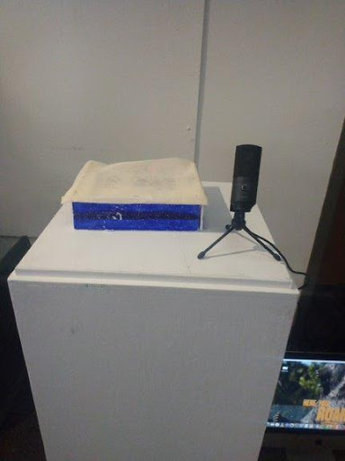

|
Personal Website
Made by myself using HTML, CSS, and JAVASCRIPT
A personal website made with the purpose store and display all of my
Gaming, Coding, Art, and Musical Projects. As you can see from being
here, it is being worked on as we speak and will be full fleshed out soon.
|
|

|
Personal Website
Made using Processing, p5js, and Arduino
A coding project made in college, The main purpose was to provide a way to have
the frequecy of one's voice be translated into a divice you could place your hands
on, in speaking loudly to a mic, the device would react and respond by moving aroind
depending on how loud you were, thus you were FEELING your own SOUND.
A page was created for this project thanks to the wonderful coding work of Gustavo Allen
Feeling Sound Website
Gustavo's Page
|